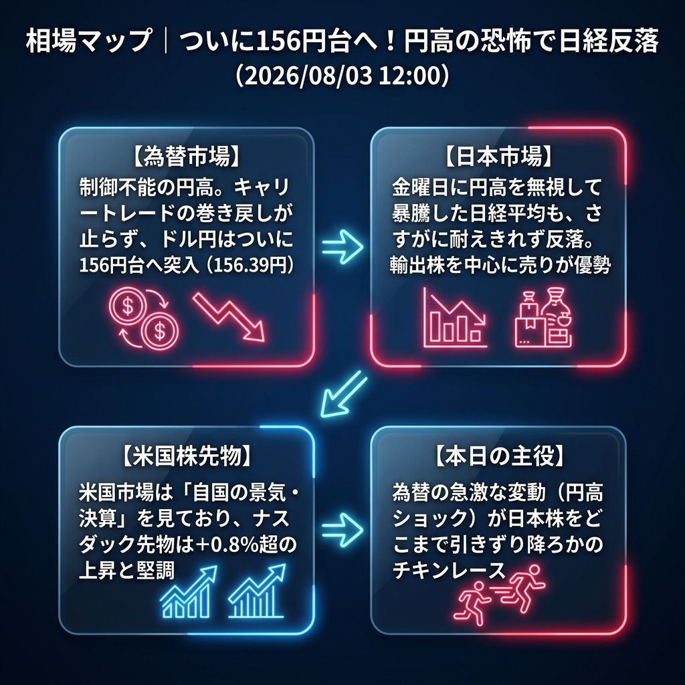

先週金曜日に「円高を無視して大暴騰」した日経平均でしたが、さすがに本日は耐えきれませんでした。ドル円が「156円台」という異常な水準まで急落（円高進行）したことで、輸出関連株を中心に強烈な利益確定売りが降ってきており、日経平均は前日比で約1%（600円超）の下落となっています。
「制御不能の円高（156円台）」と「ついに耐えきれなくなった日本株の反落」。
朝方にお伝えした157円台の円高から、さらに下落が加速し、ドル円はついに「156.30円台」まで突っ込みました。キャリートレードの巻き戻し（円の買い戻し）が完全に連鎖的なパニックを引き起こしています。
一方、米国株先物（ナスダック）は+0.8%超の上昇を見せており、「米国は株高、日本は円高で株安」という、従来通りの教科書的な相場環境に戻りつつあります。
| 指数・銘柄 | 現在値 | 前回比（前日比） | 騰落率 | 確認事項 |
|---|---|---|---|---|
| S&P 500 (ES=F) | 7,563.50 | +44.25 | +0.59% | 時間外で堅調 |
| Nasdaq (NQ=F) | 28,651.50 | +247.25 | +0.87% | ハイテク株への買い継続 |
| Dow (YM=F) | 52,924.0 | +289.0 | +0.55% | 米国株は全面高ムード |
| 日経225現物 | 63,738.05 | -623.97 | -0.97% | 【急落】円高を嫌気し反落 |
| CME日経225先物 | 63,715.0 | +445.0 | +0.70% | 米国市場対比では底堅い |
| USD/JPY | 156.390 | -1.010 | -0.64% | 【暴落】ついに156円台へ |
| EUR/USD | 1.1537 | +0.0010 | +0.09% | 高値圏で推移 |
| 金 | 4,121.9 | +14.9 | +0.36% | 引き続き強い需要 |
| 原油 | 79.61 | -5.06 | -5.98% | 【大暴落】80ドル割れへ |
| BTCUSD | 62,731.33 | -765.91 | -1.21% | リスク回避の売り |
欧州勢がこの「156円台の円高」と「79ドル台の原油安」をどう解釈するかが焦点です。原油安を「インフレ沈静化の好材料」と見て株高を加速させるか、「景気後退のシグナル」と見て米国株も巻き込んだ世界同時株安の引き金とするか、非常に重要な分岐点となります。
夕方以降の欧州市場で、原油安を「景気後退のシグナル」と危険視した投資家が米国株（ナスダック）を一斉に売り始めた場合。米国株の支えを失った日経平均先物は、強烈な円高と相まってダブルパンチを浴び、一気に62,000円割れへと奈落の底に落ちるシナリオとなります。